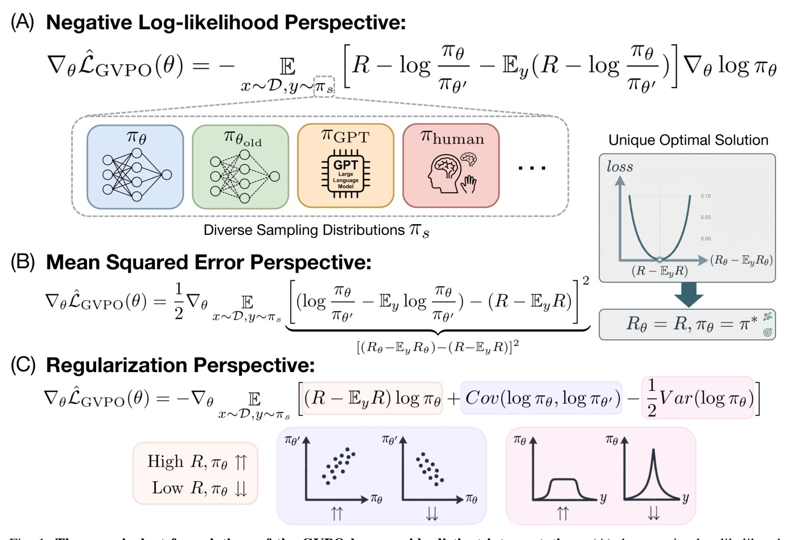
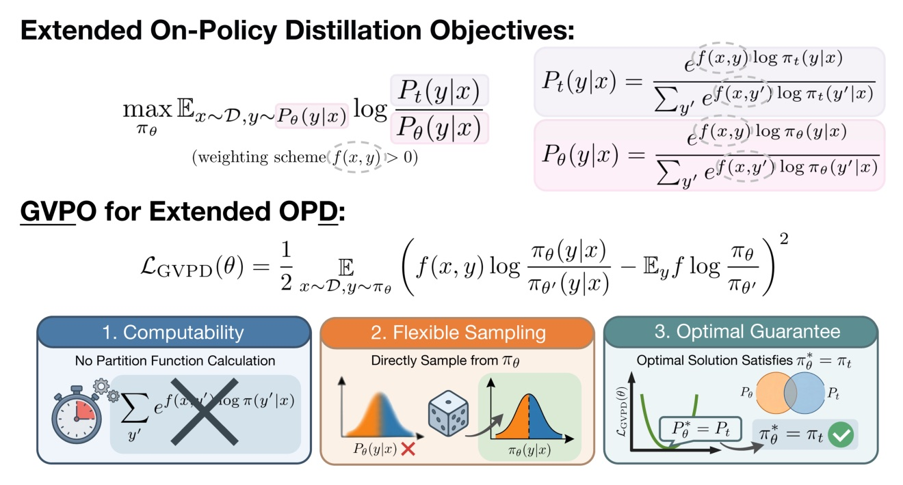
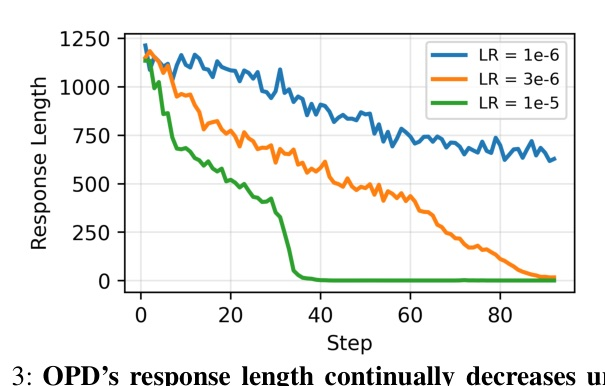
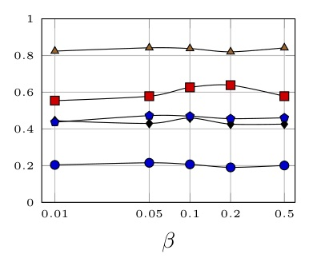
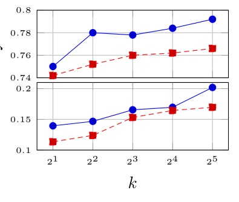
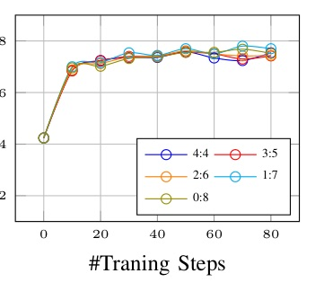

用「群組中心化 reward matching」消掉 partition function：不靠 importance sampling，同時主張唯一 KL-constrained optimum。
GVPO++ 把「學 reward」改成
對齊群組內相對 reward 的距離。

在 stated support condition 下，
GVPO 的 population objective 有唯一 minimizer，且它就是 KL-constrained optimum。
| Method | How Z(x) / sampling issue is handled | Claimed trade-off |
|---|---|---|
| DPO | Pairwise Bradley-Terry cancellation | Preference pairs; paper notes possible multiple minima |
| GRPO | Group relative advantages + IS for off-policy | No value model; IS can destabilize |
| GVPO | Group-centered zero-sum cancellation | Unique optimum claim + flexible pi_s |


| Method | AIME24 | AMC | MATH500 | Minerva | Olympiad | Avg |
|---|---|---|---|---|---|---|
| Remax | 17.19 | 60.24 | 82.00 | 40.44 | 45.19 | 49.01 |
| GSPO | 18.33 | 61.44 | 81.60 | 40.44 | 44.74 | 49.31 |
| GVPO | 20.72 | 62.65 | 83.80 | 45.95 | 46.96 | 52.02 |
| Setting | GRPO | GVPO | Delta |
|---|---|---|---|
| Llama AIME24 | 8.54 | 11.56 | +3.02 |
| Llama MATH500 | 52.60 | 56.60 | +4.00 |
| Reasoning Gym logical | 61.83 | 70.72 | +8.89 |
| Reasoning Gym math | 37.52 | 63.90 | +26.38 |
| Teacher / scenario | Comparator avg | GVPO avg | Delta |
|---|---|---|---|
| DeepSeek-R1-Distill-Llama-8B / different vocab | Policy gradient 24.75 | 35.99 | +11.24 |
| DeepSeek-R1-Distill-Qwen-7B / same vocab | MiniLLM 26.22 | 35.35 | +9.13 |
| DeepSeek-R1-Distill-Qwen-7B / same vocab | GKD 25.27 | 35.35 | +10.08 |
| Objective | AIME24 | AMC | MATH500 | Olympiad |
|---|---|---|---|---|
| GVPO | 20.72 | 62.65 | 83.80 | 46.96 |
| GVPO - Var | 0.00 | 0.00 | 0.00 | 0.00 |
| GVPO - Cov | 0.00 | 0.00 | 0.00 | 0.00 |
| GVPO - Var - Cov | 7.19 | 39.76 | 73.00 | 35.70 |
| GVPO - Var + Entropy (LR 1e-6) | 3.02 | 39.76 | 33.20 | 8.89 |



| Algorithm | AIME24 | AMC | MATH500 | Minerva | Olympiad |
|---|---|---|---|---|---|
| GRPO | 13.59±1.11 | 44.34±2.19 | 76.30±1.35 | 35.40±1.04 | 38.65±0.74 |
| GVPO | 15.56±1.05 | 45.78±2.05 | 77.36±0.98 | 36.03±1.15 | 39.58±1.08 |
真正的槓桿是 center the group：
它同時移除 Z(x)、移除 IS ratio、並生成穩定正則項。
GVPO’s gradient corresponds to the mean squared error between the central distance of implicit rewards and that of actual rewards.
GVPO 的梯度等同於隱式 reward 與實際 reward 的「中心距離」之間的均方誤差。Abstract p.1
GVPO supports highly flexible off-policy sampling strategies while maintaining strong theoretical guarantees.
GVPO 在維持理論保證的同時，允許高度彈性的 off-policy 取樣。§IV-C p.5
the student and teacher need not share the same vocabulary or tokenization scheme.
student 與 teacher 不必共享 vocabulary 或 tokenizer。§V-A p.7
| Claim | Paper support | Scope caveat |
|---|---|---|
| Unique KL-constrained optimum | Theorems IV.1–IV.2 | Population + support condition |
| No IS off-policy update | Centered gradient construction | Experimental mixtures are limited |
| Cross-tokenizer OPD | Table VI, Llama teacher | Math-reasoning evaluation |
以 group-centered implicit reward matching，將 KL-optimal policy optimization、off-policy sampling 與 sequence-level distillation 放到同一個 objective。